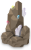
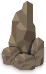

リブラの見た夢 攻略サイト
『リブラの見た夢』の進め方や、住人の頼みごと、収集要素をまとめています。知りたい項目を目次から選んでください。
メインシナリオ
ゲームの基本的な進め方から、攻略チャート、エンディング分岐、クリア後について説明しています。
クエスト
住人の頼みごとを進める手順を紹介しています。目次からクエスト名を選べます。
クエスト関連
クエストに関わる仕組みや、進めるうえでの注意点をまとめています。
Steam実績
各実績の達成条件と手順を紹介しています。
隠し要素・小ネタ
探索や収集をもっと楽しむための情報を紹介しています。
01 / メインシナリオ
ゲームの進め方
住人の悩みを解決してリンゴを集め、アミリとの時間を過ごしながら、夢の世界の奥へ進みましょう。
探索と、アミリの待つ部屋を行き来する
- 住人の悩みを解決して、リンゴを手に入れる
各地の住人に話しかけると、クエストが始まります。頼みごとを解決すると、お礼にリンゴをもらえます。探索する場所やクエストを進める順番は自由です。
- リンゴをアミリに渡して、魅力を上げる
自宅の「部屋」に戻り、アミリにリンゴを渡して一緒に過ごすと、魅力が上がります。選択肢による違いは「魅力の上げ方」で説明しています。
- 新しく通れるようになった道を探索する
心の魅力と体の魅力を足した「魅力合計」が、特定の道を通る条件になります。魅力合計1・3・10を目安に、行けなかった場所を訪れてみましょう。
- 特定のマップで、メインシナリオを進める
探索を進めて特定の場所を訪れると、メインシナリオのイベントが起こります。イベントを進めることで開く道もあるため、クエストで魅力を上げることと、物語を進めることの両方が大切です。
01 / メインシナリオ
魅力の上げ方
魅力には「心の魅力」と「体の魅力」があります。迷ったら、両方をバランスよく上げていけばOKです。
リンゴを渡して、アミリと過ごす
クエストをこなして手に入れたリンゴを、自宅の「部屋」にいるアミリへ持って帰りましょう。話しかけて「リンゴを渡す」を選ぶと、次の2つの選択肢が出ます。
- 「散歩がしたい」：心の魅力が1上がります。
- 「一緒に寝たい」：体の魅力が1上がります。
どちらを選んでもリンゴを1個使い、魅力合計は1上がります。現在の心の魅力・体の魅力・魅力合計は、メニューのステータスで確認できます。
心と体の魅力を、バランスよく上げよう
新しい道を通るために必要なのは、心の魅力と体の魅力を足した「魅力合計」です。一方で、心と体の魅力の配分は、終盤のエンディングの選択肢に影響します。
特にこだわりがなければ、散歩と一緒に寝ることを交互に選んでいけば大丈夫です。心の魅力5・体の魅力5を目指すと、魅力合計10で終盤へ進めるうえ、どちらのエンディングの選択肢も選べるようになります。
片方に偏っていても、あとからリンゴを渡して低い方を上げられます。最後に「心臓」を訪れる前に、両方が5以上になっているか確認しておきましょう。
01 / メインシナリオ
攻略チャート
ゲーム開始から、「脳」のイベントを経て再び「心臓」を訪れるまでの流れです。クエストは好きな順番で進めて構いません。
-
「森2」でチュートリアルを受ける
開始直後の案内に従って、移動・会話・アイテムの拾い方を覚えます。リンゴを拾ったら案内役のところへ戻り、もう一度話しかけてチュートリアルを終えましょう。
-
森を抜けて「部屋」に帰り、アミリに会う
魅力合計 0 → 1
「森2」の東から「森1」へ出て、北へ進むと「胃」に着きます。「胃」の北側、中央寄りの道から自宅の「部屋」に入りましょう。
アミリに話しかけ、チュートリアルで拾ったリンゴを渡します。散歩か一緒に寝ることを選ぶと魅力合計が1になり、「胃」の西から「洞窟2」、東から「氷1」へ進む道が通れるようになります。
-
「森」「氷」「洞窟」などを探索し、魅力を3まで上げる
魅力合計 1 → 3
各地で住人の頼みごとを聞き、リンゴを集めます。手に入れたリンゴをアミリに渡し、魅力合計をあと2上げましょう。すぐに解決できないクエストは後回しにして構いません。
魅力合計が3になると、「胃」の北東にある「暗闇」への道が通れるようになります。
-
「胃」の北東から「暗闇」を抜け、「事故」へ進む
必要な魅力合計：3
「暗闇」を北へ進み、途中のイベントを見ます。そのまま北へ抜けると、交差点のある「事故」に到着します。ここでもイベントを進めましょう。
-
「事故」の北東から「心臓」へ進む
「事故」の北側には2本の道があります。まずは東側の道から「心臓」に入り、イベントを見ましょう。
イベント後は「事故」の北西の道から「秋1」へ進めるようになります。同時に「豪邸2」の南北も開き、南の「豪邸1」と北の「豪邸3」へ行き来できるようになります。
-
「秋」「豪邸」「炭鉱」「病院」などでクエストを進める
目標：魅力合計10
「秋1」からは、北へ進むと「豪邸1」、東へ進むと「炭鉱1」、西へ進むと「秋2」に行けます。「秋2」の西には「病院1」があります。
新しいエリアや、これまでに訪れた場所でクエストを進め、リンゴをアミリに渡して魅力合計を10まで上げましょう。魅力合計3からなら、追加で7個のリンゴが目安です。
-
「墓」の北から「脳」へ進む
必要な魅力合計：10 ／ 最初の「心臓」のイベント後
「病院1」の北から「病院2」へ進み、さらに北へ抜けると「墓」に着きます。魅力合計が10以上なら、「墓」の北の道から「脳」に入れます。中で起こるイベントを見ましょう。
-
必要に応じて、各地のクエストや魅力の配分を見直す
「脳」のイベント後、先へ進むために魅力合計をさらに上げる必要はありません。残ったクエストを進めたい場合は、ここで各地を巡りましょう。エンディングに備えた配分の目安は「魅力の上げ方」を参照してください。
-
再び「心臓」を訪れる
準備ができたら「事故」に戻り、北東の道から「心臓」へ入ります。「脳」のイベントを終えていると、物語の続きが始まります。
01 / メインシナリオ
エンディング分岐
エンディングは2通りあります。ここでは物語の内容に触れず、両方を選べるようにするための条件を説明します。
心の魅力・体の魅力を、それぞれ5以上にする
心の魅力と体の魅力が両方とも5以上なら、終盤で2通りのエンディングにつながる選択肢を選べます。どちらか一方が5未満だと、選べるのは片方だけになります。
魅力合計が10でも、心7・体3のように偏っていると両方は選べません。迷ったら、心5・体5を目指してバランスよく上げていきましょう。
最後に「心臓」を訪れる前に確認する
メニューのステータスで、心と体の魅力を確認しましょう。どちらかが足りなければ、アミリにリンゴを渡して低い方を上げれば大丈夫です。詳しい手順は「魅力の上げ方」を参照してください。
両方が5以上になったら、あとは物語を進め、そのときに選びたい方を選んでください。
01 / メインシナリオ
クリア後
「就眠」エンドでクリアすると、そのまま探索を続けられます。アミリと一緒に出かけることもできます。
アミリと一緒に出かける
クリア後に部屋でアミリに話しかけると、「ついて来て」を選べるようになります。選ぶとアミリがついてくるので、一緒に各地を歩くことができます。
ただし、特にイベントが増えたり変わったりはしません。
部屋に戻ると、一緒のお出かけは終わります。また誘えば、何度でも一緒に出かけられます。
残ったクエストを進めよう
クリア後に新しいメインシナリオや追加クエストが始まるわけではありません。まだ終えていないクエストを引き続き進められます。
絵画などの収集も続けられます。クリア後に入手できる絵画については、絵画の場所一覧を参照してください。
02 / クエスト
生きることに必死な二人
依頼を受ける場所：森3・北東のトレント
用意するもの：ヘラクレス1匹
進め方
- 「森3」のトレントに話しかけ、頼みごとを聞きます。
- 森でヘラクレスを探して捕まえます。「森4」などで見つかることがあります。普通のカブトムシでは代用できません。
- ヘラクレスをかばんに入れてトレントに話しかけ、見つけたことを伝えます。
- 同じ「森3」の南西にいるカエルに話しかけ、ヘラクレスを渡します。
- トレントのところへ戻って報告すると完了し、リンゴをもらえます。
補足
ヘラクレスを捕まえたあとは、先にトレントへ見せるのを忘れずに。最後の報告での選択によって会話は変わりますが、どちらでも完了できます。
02 / クエスト
恋人はクローバー
依頼を受ける場所：森4・南東のカエル
用意するもの：四葉のクローバー1つ
進め方
- 「森4」のカエルに話しかけ、探しているものについて尋ねて依頼を受けます。
- 森のクローバーが生えている場所で、四葉のクローバーを探して拾います。普通のクローバーとは別のアイテムです。
- 四葉のクローバーをかばんに入れ、依頼主に渡すと完了です。
補足
四葉のクローバーは「森2〜5」で見つかることがあります。見当たらなければ、別の場所を探索してから戻ってみましょう。
02 / クエスト
ヘビとカエルの天秤
依頼を受ける場所：洞窟1・北東のヘビ
用意するもの：サファイア・エメラルド・アメジスト・ルビーを各2個
進め方
- 「洞窟1」のヘビに話しかけ、交換に必要なものを確認します。
- 洞窟や炭鉱にある宝石の付いた鉱石を銃で壊し、宝石4種類をそれぞれ2個ずつ集めます。銃は「基地」で入手できます。
- 合計8個の宝石をかばんに入れてヘビに話しかけ、交換すると完了です。
補足
宝石は部屋に置いたままでは渡せません。種類ごとに必要な数がそろっているか確認しましょう。
02 / クエスト
呪いのかけ方
依頼を受ける場所：洞窟3・北東のコウモリたち
用意するもの：藁人形
進め方
- 「洞窟2」のカエルから藁人形を引き取ります。
- 藁人形をかばんに入れて「洞窟3」のコウモリたちに話しかけると、クエストが始まります。
- 「森2」に現れたトレントに話しかけ、呪いについての話を聞きます。
- リンゴをもらいたい場合は、呪いを実行せずに「洞窟3」へ戻り、コウモリたちに報告します。報告時のどちらの選択でもリンゴをもらえます。
補足
呪いを実行した場合も、コウモリに報告すればクエストは完了しますが、リンゴはもらえないうえ後味の悪い結末になります。
02 / クエスト
ウミノケ
依頼を受ける場所：氷1・南西の漁師のペンギン
用意するもの：依頼で受け取るウミノケ
進め方
- 「氷1」の漁師のペンギンの頼みごとを引き受け、ウミノケを受け取ります。
- 「氷3」の南東にいるアントン先生を訪ね、ウミノケを渡して会話を進めます。
- 会話後に渡されたものを拾い、「氷1」の漁師のペンギンに報告すると完了です。
補足
途中の選択によって受け取るものや報告時の会話が変わりますが、どちらの流れでも完了できます。
02 / クエスト
気の毒な男
依頼を受ける場所：氷3・南西のペンギン
用意するもの：クチナシ1つ
進め方
- 「氷3」の南西にいるペンギンに話しかけ、依頼を受けます。
- 「森4」でクチナシを拾い、かばんに入れて依頼主に見せます。
- 受け取った手紙を「氷4」の南西にいるペンギンへ届けます。クチナシも一緒に渡すかどうかで会話が変わります。
- 「氷3」の依頼主に戻って報告すると、クエスト完了になります。
補足
手紙を届けたときにリンゴをもらえますが、それだけでは完了扱いになりません。最後の報告まで済ませましょう。
02 / クエスト
人のために生きるペンギン
依頼を受ける場所：氷2・北側のペンギン
用意するもの：なし
進め方
- 「氷2」の北側にいるペンギンに話しかけます。
- リンゴを受け取り、会話の選択肢を選んで最後まで聞くと完了です。
補足
アイテム集めや別の場所へのお使いは不要です。会話の選択は好きな方で構いません。
02 / クエスト
夢の高級キノコ
依頼を受ける場所：炭鉱3・南西の炭鉱夫
用意するもの：松茸またはキノコ1つ
進め方
- 「炭鉱3」の南西にいる炭鉱夫に話しかけ、依頼を受けます。
- 「秋1」「秋2」で松茸を探します。森や秋にある普通のキノコを渡すこともできます。
- どちらかをかばんに入れて炭鉱夫に話しかけ、渡すと完了です。
補足
渡すものによって会話は変わりますが、どちらでもリンゴをもらえます。
02 / クエスト
炭坑の絵描き
依頼を受ける場所：炭鉱2・絵描きの炭鉱夫
用意するもの：依頼で受け取る絵画『恋』
進め方
- 「炭鉱2」の絵描きから、絵を売る手伝いを引き受けます。
- 受け取った『恋』を「豪邸2」の東側にいる絵画好きのカボチャへ持っていき、売ります。
- 「炭鉱2」の絵描きに戻って報告すると完了です。
補足
売った絵を収集用に手に入れる方法は、絵画の場所一覧にまとめています。
02 / クエスト
お屋敷の子ども
依頼を受ける場所：豪邸1・子どものカボチャ
用意するもの：依頼で受け取る絵画『頑張る炭鉱夫』
進め方
- 「豪邸1」の子どものカボチャから、絵を届ける依頼を受けます。
- 『頑張る炭鉱夫』を「炭鉱1」の北東にいる炭鉱夫へ渡します。
- 「豪邸1」の子どもに戻って報告すると完了です。
補足
炭鉱夫に再度話しかけると絵画を買い戻せる流れになりますが、クエストの進行には影響しないため特に進める必要はありません。
絵画を全て集めたい場合のみ進めましょう。
02 / クエスト
不老不死の薬
依頼を受ける場所：豪邸3・北西の部屋のカボチャ
用意するもの：エリクサー1つ・銃
エリクサー。他の薬と取り違えないよう、この見た目を目印に探しましょう。
進め方
- 「豪邸3」の北西の部屋にいるカボチャから、薬を探す依頼を受けます。
- 「病院1」の北西の部屋などでエリクサーを探し、依頼主に渡します。
- 薬を渡したあと、北東の部屋にいるもう一人のカボチャに話しかけます。
- エリクサーを渡した北西の部屋のカボチャを銃で倒します。
- 北東の部屋のカボチャに報告すると完了です。
補足
薬を渡すだけではクエストは完了しません。その後の会話も確認しましょう。住人の復活の例外に該当するクエストです。
02 / クエスト
犠牲の上の英雄
依頼を受ける場所：病院2・北東の医者
ホラー演出が苦手な場合は、この依頼を引き受けずにスキップして構いません。メインシナリオは進められますが、このクエストの完了が条件となる「ずっと一緒に居て下さい」も進められなくなります。
用意するもの：なし
進め方
- 「病院2」の北東にいる医者の話を聞き、依頼を引き受けます。その後の問いかけには、どちらの選択肢を選んでも構いません。
- 移動先の「病院2（裏）」で、北東の部屋にいる4人全員に話しかけます。
- その後、南側に現れるもう一人に話しかけます。
- 近くの照明ボタンを押して元の病院に戻り、医者との会話を最後まで進めると完了です。再び出る選択肢は、最初と同じ答えでも、違う答えに変えても構いません。どちらでもクエストを完了できます。
補足
このクエストにはホラー演出があり、進行中はマップメニューでの移動も制限されます。完了後は照明ボタンで病院の表と裏を行き来できます。
02 / クエスト
ずっと一緒に居て下さい
依頼を受ける場所：病院1（裏）・北西の部屋の幽霊
用意するもの：銃
進め方
- 「犠牲の上の英雄」を終え、病院の照明ボタンで裏側へ移動します。
- 「病院1（裏）」の北西の部屋にいる幽霊から依頼を受けます。
- 照明ボタンで表側へ戻り、依頼で指定された相手を訪ねて行動します。
- 裏側の依頼主のところへ戻って報告すると完了です。
補足
先に依頼を受けてから行動してください。依頼主が見当たらない場合は、住人の復活も確認しましょう。
依頼後の具体的な操作を見る（クエストの展開に触れます）
幽霊の依頼を受けたあと、表側の「病院1」の北西の部屋にいる医者を銃で倒します。その後、裏側へ戻って幽霊に報告してください。
02 / クエスト
太古のロマン
依頼を受ける場所：豪邸2・南西のカボチャ
用意するもの：完成した恐竜の化石
進め方
- 「豪邸2」の南西にいるカボチャに話しかけ、依頼を受けます。
- 洞窟や炭鉱で化石のパーツを集め、化石の組み立てを参考に完成させます。
- 完成した「恐竜の化石」をかばんに入れ、依頼主に渡すと完了です。
補足
パーツを7種類持っているだけでは渡せません。先に組み立てて、完成品にする必要があります。
02 / クエスト
光合成の味
依頼を受ける場所：宇宙・食べ物について話す宇宙人
用意するもの：カレー・ステーキ・野菜炒め・オムライスを各1つ
進め方
- 宇宙への行き方を参考に「宇宙」を訪れます。
- 食べ物について話す宇宙人に話しかけ、2種類の質問を両方選ぶと依頼が始まります。
- アミリの料理でカレー・ステーキ・野菜炒め・オムライスを集めます。
- 料理をかばんに入れ、宇宙人にそれぞれ渡します。4種類すべてを渡すと完了です。
補足
料理は一度にそろえなくても、手に入れたものから渡せます。クッキー・お弁当・うな重は、この依頼の対象ではありません。
03 / クエスト関連
住人の殺害
話しかけられる住人を殺すと、その住人に関係するクエストを進められなくなります。銃を使う前に相手を確認しましょう。
頭上の会話アイコンを確認する
住人には、野良の生き物とよく似た姿のキャラクターもいます。頭上の会話アイコンを見落とさず、話しかけられる相手かどうか確かめてから銃を使いましょう。
誤って撃ったら、倒す前にマップを離れる
住人を撃つと、会話できなくなります。まだ生きていれば、それ以上攻撃せずに別のマップへ移動してから戻ることで、再び話しかけられるようになります。
完全に殺してしまった場合も、救済措置があります。詳しい手順は住人の復活を参照してください。
クエストの手順として殺す場合もある
一部のクエストでは、進行の中であえて住人を殺すことがあります。その場合は依頼や会話の内容に従って進めてください。
クエストの展開によって死亡した住人には、復活できない場合があります。対象のクエストは住人の復活にまとめています。
03 / クエスト関連
アイテムの破壊
一部のアイテムは、銃で壊すと中から別のアイテムが出てくることがあります。
岩を壊す
洞窟や炭鉱には、宝石が出る岩と化石のパーツが出る岩の2種類があります。見た目が異なるので、欲しいものに合わせて探しましょう。

宝石が出る岩。銃で壊すと、クエストでの交換などに使える宝石が出てくることがあります。

化石のパーツが出る岩。銃で壊すと、化石の組み立てに使うパーツが出てくることがあります。
氷を壊す
「氷」エリアなどにある氷のかたまりを壊すと、魚などが出てくることがあります。ときには珍しい生き物が見つかることもあります。
珍しいものについてはレアアイテムにまとめています。
03 / クエスト関連
化石の組み立て
化石は集めるだけでなく、パーツを並べて組み立てられます。
7種類のパーツを集める
洞窟や炭鉱にある、下の画像のような鉱石を銃で壊すと、化石のパーツが出ることがあります。普通の石や、宝石が出る鉱石とは別のものです。銃は「基地」で入手できます。
必要なのは頭・胴・右手・左手・右足・左足・尻尾の7種類です。重複したパーツだけでは完成しないので、名前を確認して集めましょう。
化石のパーツが出る鉱石
かばんか地面で、完成形に合わせて並べる
パーツを集めたら、かばんの中、または地面でジグソーパズルのように並べます。部屋でも組み立てられます。
胴を中心に、頭を右上、尻尾を左、手を胴の上側、足を下側に合わせます。下の完成形を目安に、パーツを少しずつ重ねて調整してください。
正しい形にそろうと、自動で1つの「恐竜の化石」になります。うまくいかないときは、手足のパーツが入れ替わっていないか確認しましょう。
完成形の目安
完成後の使い道
組み立てが完成すると、実績考古学者を達成できます。
完成品は「太古のロマン」の依頼主へ渡せます。部屋に飾って楽しむこともできます。
03 / クエスト関連
宇宙への行き方
「炭鉱3」の地面にある不思議な模様が、宇宙への入口になっています。
模様の上で「現在地を登録」する
- 「秋1」の東から「炭鉱1」へ入り、南へ進んで「炭鉱3」に向かいます。
- 「炭鉱3」の東側にある、地面の不思議な模様の上に立ちます。マップのアイコンが緑色に変わるのが目印です。
- マップメニューを開き、未登録の枠を選んで「現在地を登録」します。通常の現在地ではなく「宇宙港」が登録されます。
- 登録された「宇宙港」を選び、「登録した場所へ移動」で移動します。
- 「宇宙港」の東側にあるUFOに乗ると、「宇宙」へ行けます。
宇宙にも話しかけられる住人やクエストがあります。帰りに備えて、普段使う場所もマップに登録しておくと便利です。
03 / クエスト関連
病院（裏）への行き方
病院の裏側には、特定のクエストを進めることで行けるようになります。
「犠牲の上の英雄」を進める
「病院2」の医者から「犠牲の上の英雄」を引き受けると、クエストの途中で「病院2（裏）」へ移動します。
クエストを完了したあとは、病院の照明ボタンを押すと、表と裏を行き来できます。「病院1」で切り替えると「病院1（裏）」へ進めます。
「病院1（裏）」では「ずっと一緒に居て下さい」を受けられます。ホラーが苦手で「犠牲の上の英雄」をスキップする場合は、こちらも進める必要はありません。
03 / クエスト関連
取り返しのつかない要素
クエストの選択やアイテムの扱いによって、あとから戻せなくなるものをまとめています。
魅力
一度上げた魅力は振り直せません。両方のエンディングを選べるようにするには、心の魅力・体の魅力がそれぞれ5以上必要です。
クエストは全15個で、報酬とチュートリアル分を合わせるとリンゴは最大16個手に入ります。一方の魅力に12以上振ると、この分だけではもう一方を5まで上げられません。呪いを実行した場合など、リンゴを受け取れなかったクエストがあると余裕はさらに少なくなります。
両方のエンディングを選びたい場合は、まず心と体をそれぞれ5まで上げるように配分しましょう。詳しくは魅力の上げ方を参照してください。
配分が偏り、どうしてもリンゴが足りなくなった場合には、森2での追加入手という救済措置があります。
クエストの結末
多くのクエストでは、好きな選択肢を選んで進めて大丈夫です。ただし、一度確定した結末を、あとから別の展開に変えることはできません。完了後の住人のセリフも、選んだ展開に応じたものになります。
以下に、住人の生死やアイテムの入手に関わる注意点をまとめています。
エンディング後のセーブ
エンディング後にセーブすると、そのセーブデータからはもう一方のエンディングを見ることができません。クリア後に魅力を上げても、エンディングを選び直すことはできません。
両方のエンディングを見たい場合は、心と体の魅力をそれぞれ5以上にしたクリア前のセーブデータを残しておきましょう。エンディング後の続きを保存するときは、クリア前のデータを上書きせず、別のセーブ枠を使ってください。詳しくはエンディング分岐を参照してください。
「呪いのかけ方」で死亡するルートを選ぶ
呪いのかけ方は、住人を生存させたまま完了できるクエストです。ただし、実際に呪いをかけると住人が死亡し、住人の復活でも元には戻せません。
生存するルートを選びたい場合は、呪いを実行せずに依頼主へ報告しましょう。呪いを実行した場合もクエストは完了しますが、お礼のリンゴはもらえません。
取り戻した絵画「頑張る炭鉱夫」の紛失
お屋敷の子どもで届けた「頑張る炭鉱夫」は、宝石と交換して取り戻せます。ただし、取り戻せるのは一度だけです。その後に外へ置き去りにしたり、壊したりして失うと再入手できません。収集用に部屋で保管しましょう。
実績「絵画収集家」をまだ達成していない場合、この絵を失うと、そのデータでは全23点をそろえられなくなります。取り戻す手順は絵画の場所一覧にまとめています。
なお、最初に炭鉱夫へ届ける前に紛失した場合は、依頼主の子どもからもう一度もらえます。
「アントンの手紙」の紛失
ウミノケで選択肢によってもらえる「アントンの手紙」は、紛失しても再発行されません。手紙を渡す展開を選びたい場合は、必ず拾ってかばんに入れ、漁師へ報告するまで保管しましょう。
どちらの結末でもクエストは完了し、リンゴをもらえます。クエストや実績の達成ができなくなるわけではありません。
アミリのアイテムへの反応
部屋に置いたアイテムへのコメントは、反応の種類ごとに一度だけ聞けます。同じものを置き直しても、聞いたコメントは再び出ません。複数のアイテムで共通の反応になる場合や、組み合わせによって別の反応が出る場合もあります。
絵画への反応は、まとめて飾ると少ない枚数のときのコメントを見逃すことがあります。ひと通り聞きたい場合は、まず1点を飾って話しかけ、次に10点、最後に全23点と、段階的に増やしましょう。
組み合わせの例はアミリの特殊な反応にまとめています。
04 / Steam実績
覚醒
覚醒エンドでゲームをクリア
達成方法
心の魅力を5以上にし、「脳」のイベントを終えたあと「心臓」で物語を最後まで進めます。
心と体の魅力が両方とも5以上の場合は、終盤に表示される2つの選択肢のうち上の選択肢が対象です。
準備についてはエンディング分岐を参照してください。両方の実績を目指す場合は、最後に「心臓」へ入る前のセーブを残しておくと便利です。
04 / Steam実績
就眠
就眠エンドでゲームをクリア
達成方法
体の魅力を5以上にし、「脳」のイベントを終えたあと「心臓」で物語を最後まで進めます。
心と体の魅力が両方とも5以上の場合は、終盤に表示される2つの選択肢のうち下の選択肢が対象です。
このエンディングの後は探索を続けられます。絵画収集家に必要な絵画も追加されるため、収集を進めたい場合はこちらも見ておきましょう。魅力の準備はエンディング分岐にまとめています。
04 / Steam実績
クエストマスター
全てのクエストをクリア
達成方法
メニューにある15件すべてのクエストを完了し、クエストメニューを開くと達成できます。
リンゴを受け取ったあとにも報告が必要なクエストがあります。メニューで完了のチェックが付いているか確認しましょう。
分岐のあるクエストも、全ルートを見る必要はありません。どれかのルートで完了すれば対象になります。
クエスト一覧
各クエストの手順はこちらから確認できます。
04 / Steam実績
一服
ドリンクを買った
達成方法
金貨か銀貨をかばんに入れ、自動販売機へ落として飲み物を買うと達成できます。
具体的な操作はジュース購入を参照してください。
04 / Steam実績
清掃員
ゴミを捨てた
達成方法
「ティッシュのごみ」または「ティッシュの空箱」をゴミ箱に捨てると達成できます。
ごみの入手方法と捨て方はティッシュにまとめています。
04 / Steam実績
積極的
ティッシュを使い切った
達成方法
ベッドの近くに置いたティッシュが、使われて空箱になると達成できます。
発生する出来事や準備についてはティッシュを参照してください。
04 / Steam実績
考古学者
恐竜の化石を完成させた
達成方法
7種類の化石パーツを正しく並べ、完成した「恐竜の化石」にすると達成できます。
入手方法と配置の目安は化石の組み立てを参照してください。完成品をクエストで渡す前に、この実績は達成できます。
04 / Steam実績
宇宙旅行
宇宙に行った
達成方法
「宇宙港」からUFOに乗り、「宇宙」に到着すると達成できます。宇宙港への移動だけでは達成されません。
移動手順は宇宙への行き方にまとめています。
04 / Steam実績
絵画収集家
絵画を全て集めた
達成方法
かばんと部屋を合わせて、全23点の絵画を所持している状態にすると達成できます。一度拾ったことがあるだけでは足りないので、集めた絵画は部屋に保管しましょう。
最後の1点を拾ったタイミングで実績が解除されます。同名の『宇宙戦争』も3点すべて必要です。
各絵画の画像・入手場所・クエストで渡した絵の取り戻し方は、絵画の場所一覧を参照してください。
04 / Steam実績
ピンクペンギン
ピンクのペンギンを捕まえた
達成方法
氷を壊すと現れることがあるピンクペンギンを、かばんに入れると達成できます。見つけるだけではなく、捕まえましょう。
詳しくはレアアイテムを参照してください。
04 / Steam実績
殺害
住民を殺害した
達成方法
依頼主などの固有の住人を殺すと達成できます。各地に出現する一般の生き物を倒すだけでは対象になりません。
一部のクエストを進める過程でも達成できるので、実績のために別の住人を殺す必要はありません。注意点は住人の殺害で確認できます。
05 / 隠し要素・小ネタ
死亡
生き物などから攻撃を受け、体力がなくなると死亡して自宅の「部屋」に戻されます。
死亡してもペナルティはない
部屋に戻ると体力が回復し、再び探索に出かけられます。持ち物を失ったり、魅力が下がったりするペナルティはありません。クエストの進行状況もそのままです。
アミリとの専用イベント
死亡して部屋に戻されたときには、アミリとの専用イベントが見られます。
05 / 隠し要素・小ネタ
アミリの料理
部屋にキッチンを置くと、留守の間にアミリが料理やおやつを用意してくれることがあります。
キッチンを置いて、外出してみよう
キッチンを部屋に持ち帰り、アミリが使えるように手前を家具などでふさがずに設置します。外出して戻ったとき、料理中のアミリに話しかけると食事を出してくれます。毎回料理をするわけではないので、探索の合間に様子を見ましょう。
通常の料理はカレー・ステーキ・野菜炒め・オムライスの4種類です。
料理とは別に、クッキーかお弁当を渡してくれることもあります。こちらもキッチンの設置が条件です。
うなぎを置くと「うな重」に
部屋にうなぎを置いておくと、アミリが料理をするときに1匹使い、通常の料理の代わりにうな重を作ります。かばんに入れたままではなく、部屋に置いておきましょう。うなぎの入手方法は「レアアイテム」を参照してください。
テーブルマットで食卓を整える
部屋のテーブルにテーブルマット（ランチョンマット）を敷いておくと、アミリがその上に料理を置いてくれます。
05 / 隠し要素・小ネタ
アミリの特殊な反応
部屋に置くものを変えると、アミリのコメントや留守中の過ごし方にも変化があります。
アイテムの組み合わせで、特別なコメント
次のものを部屋にそろえてアミリに話しかけると、単体で置いたときとは違うコメントが聞けます。
- 氷とペンギンを一緒に置く。先にペンギンだけを置いてアミリの反応を見てから、氷を追加するのがおすすめです。
- 宝石4種類（サファイア・エメラルド・アメジスト・ルビー）をそろえる。
- バイク3種類をそろえる。
- クマのぬいぐるみを3個以上置く。
ほかのアイテムへの反応が先に出ることもあるので、何度か話しかけてみましょう。
ティッシュの特殊な反応についてはこちら
家具によって、留守中の行動が変わる
ソファ・テレビ・オーディオを部屋に置くと、帰宅時にアミリがソファでくつろいだり、テレビやオーディオの前で過ごしたりすることがあります。
家具の手前をふさがず、使えるように配置しておきましょう。毎回同じ行動をするわけではないので、探索から帰ったときの様子も楽しんでみてください。
05 / 隠し要素・小ネタ
絵画の場所一覧
絵画は全部で23点。主に病院と豪邸の壁に飾られています。壁の絵に近づき、かばんへ入れて持ち帰りましょう。
同名の『宇宙戦争』は、絵柄の異なる3点があります。画像で見分けて、すべて集めましょう。
クエストに関係する絵画
『恋』：「炭坑の絵描き」で受け取る絵です。「豪邸2」の収集家へ売ったあと、マップに入り直すと壁に飾られます。そこから持ち帰れます。
『頑張る炭鉱夫』：「お屋敷の子ども」で受け取り、「炭鉱1」の炭鉱夫へ届けます。その後もう一度話しかけて買い戻す相談をし、サファイア・エメラルド・アメジスト・ルビーを各1個渡すと返してもらえます。
『リブラの見た夢』：就眠のエンディング後、「胃」の北西側に現れます。
集めた絵は部屋に保管する
絵画収集家は、かばんと部屋を合わせて、全23点の絵画をそろえる実績です。すべて部屋に置いても、一部をかばんに入れていても構いません。クエストで渡した絵も取り戻し、最後まで保管しておきましょう。
05 / 隠し要素・小ネタ
レアアイテム
氷の中には、魚だけでなく珍しい生き物が隠れていることがあります。
氷を壊して探す
「氷」エリアなどにある氷のオブジェクトを、銃などで壊してみましょう。次のものが出てくることがあります。
- うなぎ
部屋に持ち帰ると、アミリの料理でうな重の材料になります。
- ピンクペンギン
珍しいピンク色のペンギンです。捕まえて部屋に連れて帰ると、アミリの特別な反応も見られます。
05 / 隠し要素・小ネタ
藁人形
「洞窟2」のカエルから引き取れる藁人形には、捨てても戻ってくる不思議な性質があります。
捨てると、元の持ち主のところへ戻る
藁人形を部屋の外で捨て、その場所を離れたあとに「洞窟2」のカエルへ話しかけてみましょう。捨てたはずの藁人形がカエルのところへ戻っており、特別な反応とともに受け取り直せます。
部屋に置いて保管している場合は、カエルのところへは戻りません。
持ち帰ったり、住人に見せたりしてみよう
藁人形を部屋に置いてアミリに話しかけると、専用のコメントが聞けます。また、持ち歩いていると「呪いのかけ方」のクエストを始めるきっかけにもなります。
05 / 隠し要素・小ネタ
ティッシュ
ティッシュは置く場所によって、アミリの反応や部屋での出来事が変わります。
ベッドの近くに置いて話しかける
中身のあるティッシュを部屋の右上、ベッドの近くに置いてアミリに話しかけると、専用のコメントをもらえます。ほかの場所に置くだけでは、この反応は出ません。
ほかの家具への反応が先に出る場合は、何度か話しかけてみましょう。このコメントは一度だけです。
留守中に使われることがある
専用のコメントを聞いたあと、ティッシュをベッドの近くに置いたまま外出すると、アミリが一人で使うことがあります。帰宅時にアミリがベッドにいる場合の一部で起こり、必ず発生するわけではありません。
使われていた場合は、通常の「ごめん、寝ちゃってた。」から、慌てた様子の特別なセリフに変わります。ベッドの周りにはティッシュのごみも出ます。
「一緒に寝たい」を選んだときにも使われる
ベッドの近くに中身のあるティッシュを置き、リンゴを渡して「一緒に寝たい」を選ぶと、二人で過ごしたあとにもティッシュが使われ、ごみが出ます。
空箱とごみはゴミ箱へ
ティッシュは使っているとなくなり、「ティッシュの空箱」になることがあります。空箱のままでは使われないので、続けて見たい場合は新しいティッシュを置きましょう。
「ティッシュのごみ」と「ティッシュの空箱」は、拾ってかばんからゴミ箱の上へ落とすと捨てられます。中身の残っているティッシュは、この方法では捨てられません。
05 / 隠し要素・小ネタ
ジュース購入
自動販売機は飾りではなく、コインを入れると飲み物を買えます。
自動販売機にコインを落とす
自動販売機に近づき、金貨か銀貨を1枚、かばんから自動販売機の正面上寄りへ落とします。コインが消費され、飲み物が足元に出てきます。
出てくるのはコーラかお茶のどちらかで、種類はランダムです。金貨でも銀貨でも、もらえる数は1本です。
自動販売機を部屋に持ち帰った場合も、同じ方法で購入できます。
05 / 隠し要素・小ネタ
胃
「胃」は各地をつなぐだけでなく、食べたものが再び現れる場所でもあります。
食べたものが、左下の小部屋に現れる
かばんから食べ物を使って体力を回復したあとに「胃」を訪れると、食べたものがマップ左下の小部屋に現れます。消費したはずの食べ物を、もう一度拾うことができます。
料理などを食べたら、部屋へ帰る途中に小部屋をのぞいてみましょう。
05 / 隠し要素・小ネタ
住人の復活
殺してしまった住人は、「森2」の鳥居で復活させられます。ただし、クエストの展開による死亡には例外があります。
「森2」の賽銭箱にコインを入れる
復活の対象になる住人を殺すと、チュートリアルを受けた「森2」の北側に鳥居と賽銭箱が現れます。金貨か銀貨を1枚、かばんから賽銭箱の上へ落とすと、対象の住人がまとめて復活します。「奇跡が起きた」と表示されれば成功です。各地に戻って確認しましょう。
クエストの進行状況は巻き戻りません。復活させた住人のクエストは、その時点の進行状況から続きます。
クエストで死亡した住人はどうなる？
以下のクエストの展開によって死亡した住人は、鳥居で復活させることができません。